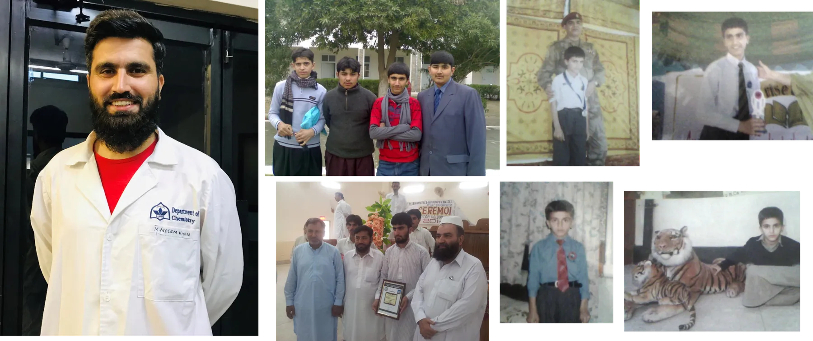
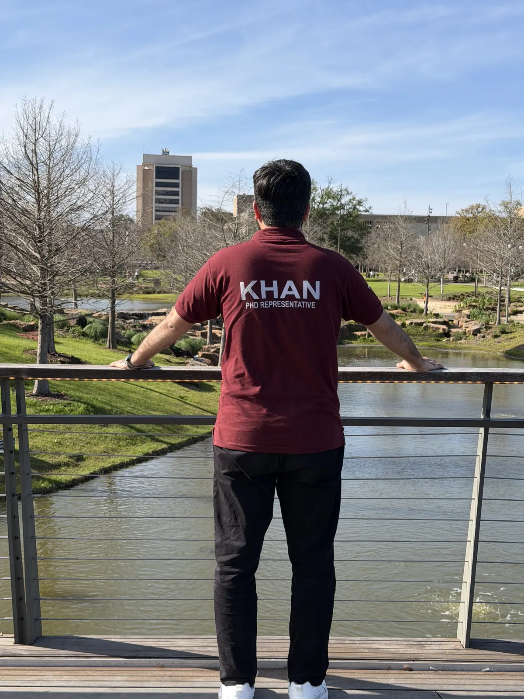
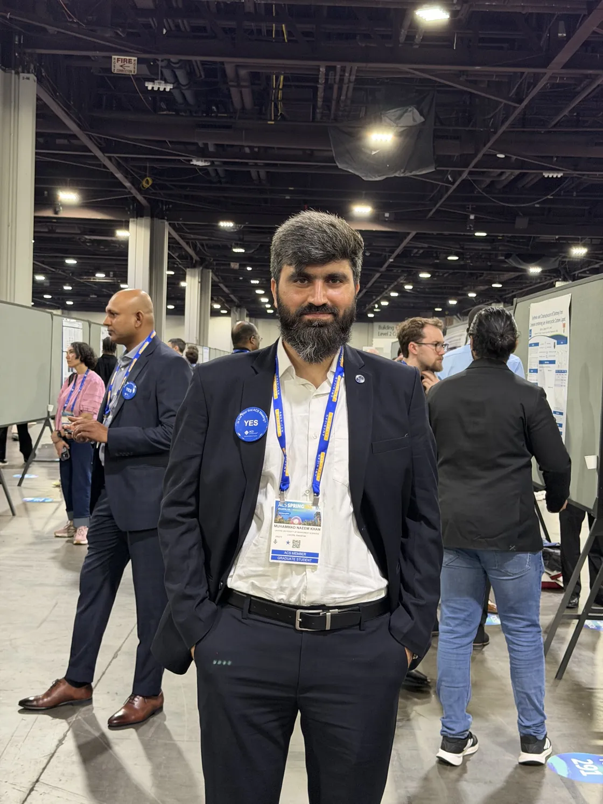
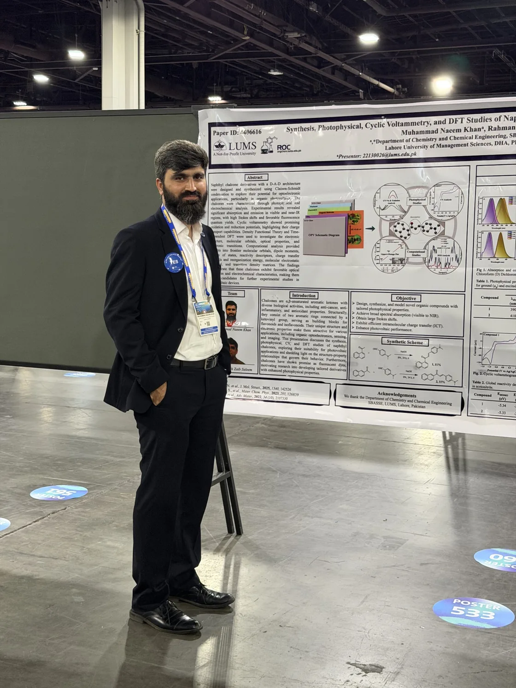
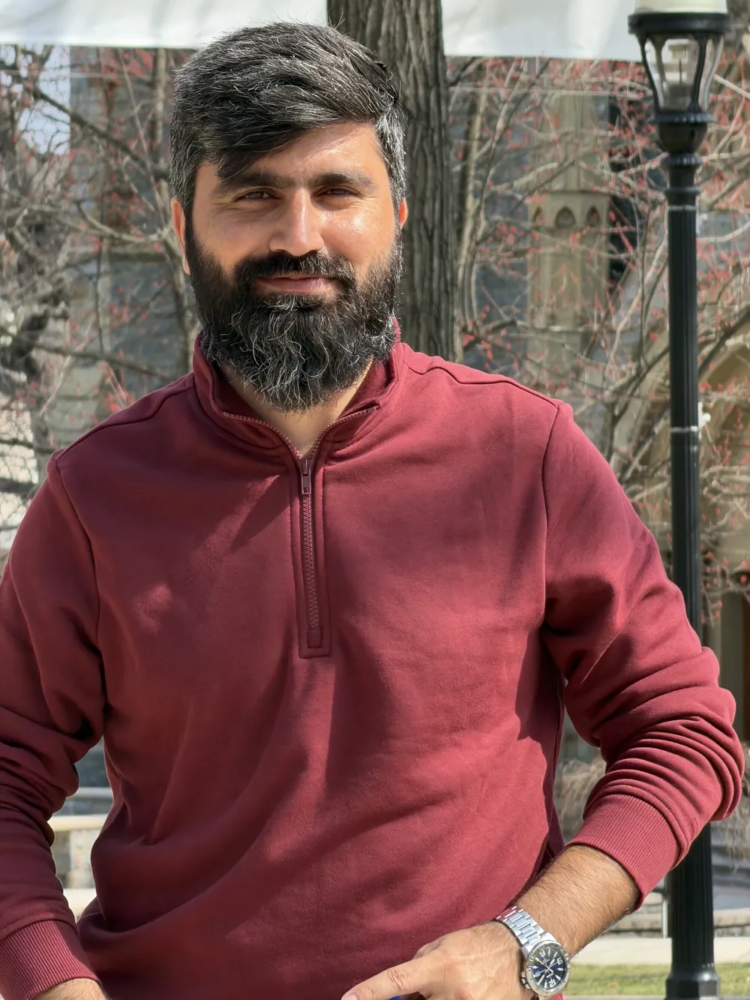

There was a time when I wondered how people wrote books and scientific papers. Today, Alhamdulillah, I find my own name among the authors of research articles published in international scientific journals.
Sometimes, when I look back at where this journey began, I find it difficult to believe how far that dream has taken me.
I come from Bannu, a region of Khyber Pakhtunkhwa, Pakistan, where educational opportunities and research facilities are not always as accessible as they are in major cities. Growing up in such an environment teaches you something important: circumstances may influence where your journey begins, but they do not necessarily determine how far you can go.
Even today, back home in Bannu, we can have only eight hours of electricity and sixteen hours of load-shedding in a day. I remember what it meant to plan study time around those limitations. They were real obstacles, but I did not want them to become the boundaries of my ambitions.
From my school days through college and university, I consistently worked hard to remain among the top-performing students. I was ambitious, curious, and perhaps a little stubborn about my dreams. I wanted to achieve something meaningful through education, even when I had little understanding of what that achievement might eventually look like.
I used to imagine myself studying at a prestigious institution, working in modern laboratories, and contributing something valuable to science. At that stage, those dreams felt distant. I didn't know exactly how I would reach them, but I knew I wanted to keep trying.
Some dreams stay with you because someone, at the right moment, takes them seriously. I still remember an English-language assignment in Grade 7 at APS Bannu. Our teacher, Sir Aftab, asked us to write something about ourselves. I was only a schoolboy, but I wrote a line that has remained engraved in my mind and heart ever since:
but before leaving this world I want to crave a name for myself that will not be erased from the pages of history by the ravages of time
Those were my own words as a seventh-grader, full of ambition and perhaps greater confidence than understanding. Sir Aftab appreciated what I had written, and his encouragement stayed with me. As I grew older, the meaning of that childhood promise matured. I did not simply want my name to be remembered; I wanted to do work that might leave a positive and meaningful impact, however small, on other people's lives.

I was not born into a world of scientific opportunities. I had to find my way toward them.
The curiosity that became a career
My academic journey eventually took me from Bannu to Islamabad, where I pursued my MSc and later MPhil in Chemistry at Quaid-i-Azam University. Those years gave me a stronger foundation in chemistry and introduced me to the discipline, patience, and critical thinking required for research.
But the most important change was not simply the knowledge I gained. It was the way I began to think.
Science was no longer only about learning reactions, memorizing concepts, or performing experiments with known outcomes. It became a way of asking questions that had not yet been answered.
That growing curiosity eventually brought me to the Lahore University of Management Sciences (LUMS), where I began my PhD in Chemistry under the supervision of Dr. Rahman Shah Zaib Saleem.
Entering doctoral research opened another world for me. I had the opportunity to work with sophisticated laboratory techniques, computational chemistry tools, and researchers with different scientific backgrounds.

Yet research quickly taught me that access to better facilities is only part of the story. Experiments fail. Reactions do not always proceed as planned. Purification can take longer than synthesis. A beautiful molecular design on paper may behave very differently in the laboratory.
There were days when the results were exciting and others when hours of effort produced more questions than answers.
Over time, I learned to appreciate both.
A successful experiment teaches you what works. An unsuccessful one often teaches you what you did not understand.
When molecules became more than chemical structures
My doctoral research revolves around a question that has fascinated me throughout my PhD:
How can small changes in molecular structure produce meaningful changes in the way organic materials interact with light, electrons, and their surroundings?
To explore this, I work at the intersection of synthetic organic chemistry, molecular photophysics, electrochemistry, and computational chemistry.
In simpler terms, I design and synthesize organic molecules, study how they absorb and emit light, examine their electrochemical behavior, and use quantum-chemical calculations to understand the electronic changes behind those observations.
My goal has been to establish structure–property relationships that can guide the development of functional organic materials, particularly molecular systems with potential applications in organic photovoltaics and optoelectronics.
My first major experience in this direction came through a collaborative project on 2-aminoimidazolone donor–acceptor chromophores, initiated with our senior PhD researcher, Dr. Humera Baig.
This project introduced me to the fascinating relationship between molecular architecture, intramolecular charge transfer, and fluorescence. As Dr. Humera approached graduation, I took on greater responsibility for synthesis, data interpretation, and computational investigations, eventually helping bring the work to publication in the Journal of Photochemistry and Photobiology A: Chemistry.
It was an important scientific and personal experience. Beyond the technical knowledge, it taught me what it means to take ownership of a research problem and carry it through to a published scientific contribution.
My first independent research direction grew from a comparatively simple molecular framework: chalcones.
Chalcones have been extensively studied in medicinal chemistry, but I became interested in exploring their potential as functional optoelectronic materials. I began designing naphthyl-substituted chalcones, changing their molecular substituents and investigating how these modifications affected absorption, fluorescence, electrochemical behavior, and electronic structure.
This work became my first independent molecular design platform and was published in the Journal of Molecular Structure in 2025 ↗.
It also left me with another question.
What if changing the substituents was not enough? What if I changed the molecular framework itself?
That question led me toward pyrazoline–thiazole hybrids, developed through multistep heterocyclic synthesis with synthetic assistance from undergraduate researcher Syed Muhammad Umer. By transforming a chalcone-based framework into a different heterocyclic architecture, we investigated how structural modification could influence charge transfer, fluorescence, and molecular electronic properties.
The resulting study was published in the Journal of Photochemistry and Photobiology A: Chemistry in 2026 ↗.
As my understanding developed, I began exploring another strategy: extending molecular conjugation through thiophene bridges.
In collaboration with Dr. Ghayoor Abbas Chotana's research group, and with synthetic contributions from MS researcher Khadija Bakhtawar, we developed thiophene-functionalized chalcones through a combination of Claisen–Schmidt condensation and Suzuki–Miyaura coupling.
These molecules demonstrated how donor and acceptor engineering could systematically alter fluorescence, charge transfer, redox behavior, and calculated charge-transport parameters. Our manuscript has been submitted for publication.
More recently, my work has moved toward scaffold rigidification and electron-deficient conjugated systems. Through chalcone, tetralone, and indane-1,3-dione derivatives, I have explored how restricting molecular flexibility can influence emission and charge-transfer behavior.
One particularly interesting lesson emerged: making a molecule more rigid does not automatically make it better. The performance depends on how rigidity interacts with donor strength, acceptor character, and the overall electronic structure.
That insight continues to influence the way I think about molecular design.
My current research also includes a project entitled "Terminal-Donor-Group Engineering of Bithiophene-Indanedione Chromophores: Tuning Charge Transfer, Optical, and Redox Properties for Optoelectronic Applications."
By combining bithiophene conjugated bridges with electron-deficient indanedione units and systematically varying terminal groups, this work further explores how molecular architecture governs optical, electrochemical, and electronic properties.
Alongside these projects, I have been fortunate to collaborate on quinoxaline carboxamides, diketopyrrolopyrrole-based materials, organoselenium chemistry, and computational investigations of organocatalytic reaction mechanisms.
These collaborations have broadened my perspective beyond a single molecular scaffold or application.
Looking back, the most valuable part of this research journey is not any one compound or publication. It is the ability to move between designing a molecule, preparing it in the laboratory, studying its properties, and understanding its behavior through computation.
For me, organic synthesis and computational chemistry are not competing approaches. They are two complementary ways of asking the same scientific question.
From Bannu to international scientific platforms
There is another part of this journey that remains especially meaningful to me.
I once dreamed of simply studying at a good university. I never imagined that one day I would travel internationally to discuss my own research with scientists from around the world.
In November 2025, I attended the international RSC–E-MRS materials science conference in Doha, Qatar. In March 2026, I had the opportunity to present my work on naphthyl chalcones at the American Chemical Society (ACS) Spring Meeting in Atlanta, USA.


Standing at an international scientific conference, discussing molecular design, organic synthesis, and optoelectronic materials, was an experience I will always remember.
Not because I believed I had achieved something extraordinary compared with the distinguished scientists around me, but because I remembered where I had started.
The boy from Bannu, who once wondered how scientists conducted research and published their findings, was now participating in those conversations himself.
I was no longer just reading about scientific discoveries. I was sharing my own work, listening to other researchers, answering questions, and learning from a much wider scientific community.
That feeling is difficult to put into words.
It reminded me that science has the remarkable ability to connect people across geography, culture, and circumstances through their shared curiosity.
From wondering who writes scientific papers to publishing my own
When I was younger, I sometimes looked at books and research articles and wondered about the people who wrote them.
How did they become knowledgeable enough to contribute something original? How did they discover something worth publishing? Would I ever be able to do the same?
Today, Alhamdulillah, I have contributed to several peer-reviewed articles in international journals, including the Journal of Molecular Structure, Journal of Photochemistry and Photobiology A: Chemistry, and ACS Omega.
Perhaps even more surprising to me is the thought that other researchers might find these contributions useful.
As I approach the completion of my PhD, my published and collaborative research has accumulated hundreds of citations, approaching the 1,000-citation milestone across scholarly records.
I understand that citation counts are not a perfect measure of scientific quality, and that meaningful research cannot be reduced to numbers. I also know that I have a great deal to learn and a long way to go before I can consider myself an established scientist.
But for someone who once wondered whether he would ever publish a scientific paper, seeing researchers engage with work to which I have contributed is deeply meaningful.
It tells me that the effort has travelled beyond the laboratory and reached people I may never meet.
A scientific paper begins with a question in one laboratory, but its value grows when it becomes useful to someone else's questions.
That, for me, is one of the most rewarding aspects of research.
The people behind the journey
No research journey is truly individual.
Whatever progress I have made has been shaped by the guidance, encouragement, and contributions of many people.
I am sincerely grateful to my PhD supervisor, Dr. Rahman Shah Zaib Saleem, for his mentorship, scientific guidance, and the research environment in which I have developed my skills.
I owe special thanks to my parents and family, who supported me long before there were publications, laboratory opportunities, or conference invitations. Their encouragement was the constant behind every changing chapter of my education.
I am equally thankful to my school, tuition, and college teachers, and to my teachers at Quaid-i-Azam University and LUMS. The confidence given to a student in an ordinary classroom can matter years later in a research laboratory. Sir Aftab's encouragement in Grade 7 remains one of my clearest reminders of that truth.
My gratitude also goes to my co-authors, collaborators, senior colleagues, and junior researchers, whose ideas, expertise, and hard work have contributed to the projects I have been fortunate to be part of.
Working with researchers such as Dr. Humera Baig, Dr. Ghayoor Abbas Chotana and his group, Kainat Ahmed, Dr. Raja Shahid Ashraf, and colleagues involved in synthetic and computational collaborations has taught me that scientific progress is strengthened by cooperation.
Mentoring younger BS and MS researchers has been another rewarding experience. Sharing what I have learned about reaction troubleshooting, purification, characterization, and computational analysis reminds me of the guidance I once needed myself.
Above all, Alhamdulillah, I remain grateful to Allah for the opportunities, strength, and people who have accompanied me throughout this journey.
The dream continues
As I move toward completing my PhD, I do not see this moment as the end of a journey.
If anything, the experience has made me more curious.
There are still so many questions I want to investigate, molecular systems I want to develop, synthetic methodologies I want to learn, and scientific problems I hope to contribute toward solving.
My next aspiration is to continue as a postdoctoral researcher, extending the experimental and computational approach I have developed toward more complex conjugated materials and new synthetic strategies.
I want to continue learning, collaborating, teaching, and contributing research that is both scientifically meaningful and useful to the wider community.
And if my story carries one message for students from Bannu, or from any place where opportunities feel limited, it is this:
You do not have to come from a place of extraordinary privilege to develop extraordinary ambitions.
Be serious about your education. Remain curious. Work consistently. Seek opportunities, even when they seem beyond your reach. Learn from failure, appreciate the people who help you, and do not allow your beginnings to define the limits of your imagination.
My journey has included moments of uncertainty, unsuccessful experiments, difficult decisions, and lessons that could never have been learned from textbooks alone.
But it has also given me opportunities I once knew only through dreams.
I am proud of how far I have come, humbled by how much there is still to learn, and excited about what lies ahead.
I once wondered how people became scientists whose work others would read.
Today, I am grateful to be contributing to that world of knowledge.
And the boy from Bannu is still dreaming. Still learning. Still moving forward — still hoping, as he wrote in Grade 7, to leave something positive behind.
Alhamdulillah, always.

Research is never the work of one person alone. Thank you for reading this part of my journey.